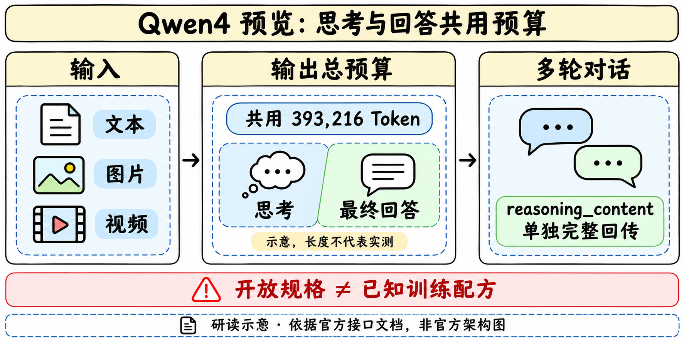

发布、家族与访问窗口
| 字段 | 官方当前披露 |
|---|---|
| 模型ID | qwen4-max-preview |
| 实际预览 | 2026-11-11 10:00至2026-11-25 24:00，UTC+8 |
| 版本稳定性 | 预览期间不做变更；预览结束后下线 |
| 接入 | 仅Token Plan，当前不支持按量计费 |
| 输入 | 文本、图片、视频；未声明原生音频输入或图像生成 |
| 上下文 | 1M Token |
| 最大输出 | 393216 Token，思考与最终回答共享 |
| 协议 | OpenAI Chat Completions / Responses，Anthropic Messages |
| 工具与格式 | Function Calling、联网搜索/内置工具、JSON Object/Schema |
模型页的“更新时间12:51:31”与“公告11/11”都不能覆盖正文明确的10:00开放时刻。兼容性公告列11/2只是协议公告，不据此把Qwen4首发提前到11/2。官方研究入口www.qwen.ai本轮DNS失败，发布事实由可读官方模型页与上架公告交叉支持，未宣称研究博客查全。
推理预算、多轮状态与复现

max_tokens与max_completion_tokens对本代等价，均限制思考与最终回答总量。若原调用只给最终回答预留少量token，迁移后思考会先消耗预算，可能提前截断；应记录两个阶段实际token和finish reason。该调整不追溯改变此前已上线Qwen模型的行为。
默认开启思考，reasoning_effort可选low、medium、xhigh，默认xhigh；它与thinking_budget不可同时设置。不能将“默认最强思考”推成同延迟或最低成本。在Chat Completions中preserve_thinking默认开启，历史assistant消息需要在reasoning_content完整回传，不拼到content。另两套API是否有完全等价字段须分别核对，不机械复制。
Token Plan使用套餐专用base URL与API Key；普通按量API的key/base URL未获本页保证可复用。本轮没有购买套餐、接受协议、获取key或调用收费服务。
证据缺口与训练研究判断
| 证据 | 可以说明 | 不足以说明 |
|---|---|---|
| 官方模型页/上架公告 | 新模型身份、10:00预览、规格与接口 | 训练算法、参数规模、同预算胜率 |
| 工具调用支持 | 接口可以表达外部工具交互 | 每个任务能成功执行或可靠恢复 |
| 1M窗口 | 规格上的容量上限 | 1M全文检索/推理成功率或实际吞吐 |
| 图片/视频理解 | 支持的输入模态 | 图像生成、原生音频或三维动作能力 |